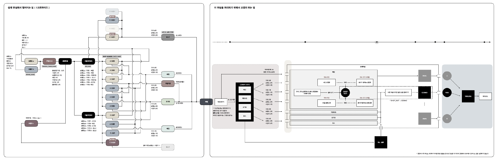
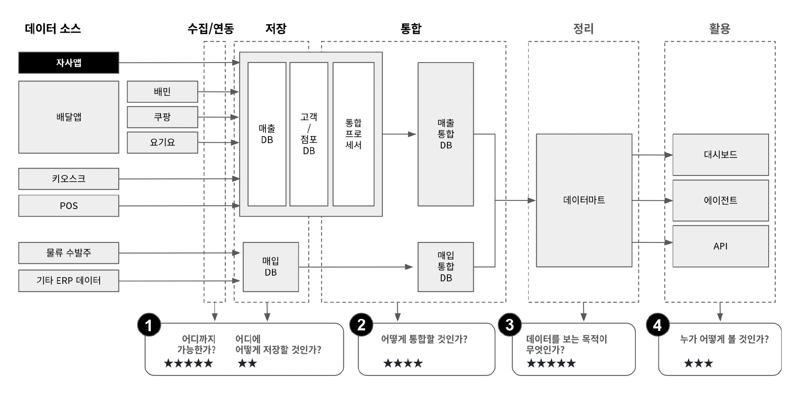
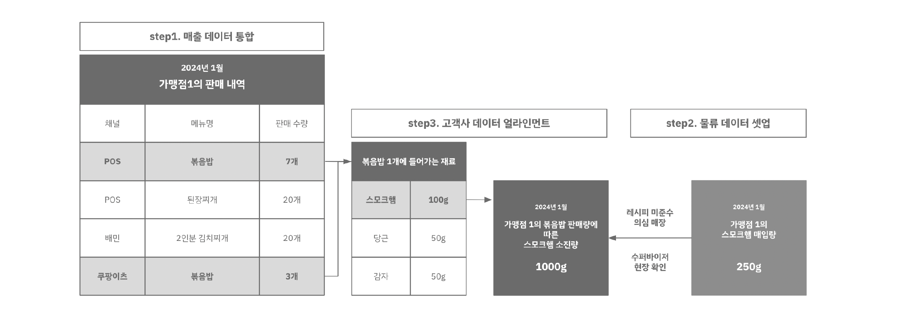

단절된 기술·고객·조직을
하나의 구조로 재설계하다
고객사 2개
해지 위기 고객 방어
고객사 3개
중견 고객 신규 유치
추가 계약
창사 이래 첫 업세일
데이터 파이프라인 재설계
문제 상황
- 불완전한 초기 기획 위에 레거시 제품이 이미 동작 중
- 레거시 시스템은 매일 오동작을 뿜어냄
- 동시에 수집 데이터 구조가 고객사·채널별로 파편화
- 주문·배달·POS·물류 등 다수 채널 데이터가 통합안됨
- 대형 고객 요청에 대응 불가능 - 내부 인력의 수작업 의존도가 높아 오류와 지연이 반복됨
- 그 제품으로 매출을 내야 하는 이중고 상황
내가 한 일
1. 내부 구조 파악:
- 현재 사업환경에서 가능한 모든 경우의 수를
내부 문서 정리, 인터뷰를 통해 다이어그램으로 정의 - 레거시 시스템의 커버리지를 오버레이해서
오동작을 발생시키는 Path 특정
2. 가장 효율적인 솔루션 실행:
- ETL 고도화: 데이터 엔지니어와 협업해
Snowflake 기반 분석 계층 분리 - Python 기반 ETL 파이프라인 구축
- Slack 연동 모니터링 자동화
- 마스터 테이블 체계 도입:
배달 3사, POS 12사,
물류 5사 전 채널 통합
브랜드·메뉴·매장 마스터 데이터 설계 - ETL 시 자동 반영 구조로 운영 비용 절감
결과
- 운영 채널 7배 확장
→ 시장 메이저 주문 솔루션 80% 지원 - ETL 자동화로 운영 인력 부담 월 0.5MM
→ 0.1MM 이하로 절감 - 신규 오프라인 고객사 10여 개 유입,
월평균 0.4억 매출 증대 기여

프랜차이즈 업계 최초 SCM 서비스 개발
문제 상황
프랜차이즈 산업의 핵심 매출은 가맹점 자체가 아니라 '가맹점이 구매하는 물류·대금 정산'에서 발생한다. 그런데 이 부분의 데이터 처리·통합이 전혀 안 되고 있었다.
더 근본적인 문제는 비즈니스 본질(정산/데이터/물류) ↔ 고객 요구 ↔ 기술 구현이 모두 단절되어 있었다는 것이다.
- 대부분의 B2B 고객사 낮은 IT 이해도, ERP 없는 상태
- 고객 요구는 비정형·비구조적 형태로 전달됨
- 영업팀은 기술 이해 부족으로 요구사항 추출 불가
- 개발팀은 반복 재개발 중, 일정 지연, 품질 불안정
내가 한 일
1. 고객 요구사항 정의 프로세스 수립:
- 최초 미팅부터 직접 참여,
고객 요구를 질의 → 재정의 → 구조화 - 비정형 요구를 개발 가능한 형태로 '번역'
- 고객사와의 기술적 소통을 전면 리딩하여 정보 손실 제거
2. 전 채널 마스터데이터 구축:
- 메뉴/레시피/자재/BOM/판매처 기준 체계 통합
- 고객사 메뉴 변경 시 자동 반영되는 구조 설계
- 자재 기반 BOM과 POS 데이터 불일치 탐지 구조 확보
3. 외부 데이터 연동:
- 행정동/법정동/공휴일/가맹사업 DB 등
고빈도 외부 데이터 자동 연동
4. 운영·조직 프로세스 개편:
- 고객사 정례 미팅을 직접 주도 (기존 영업인력 대신)
- 고객 Pain Point 구조화
→ 즉시 피드백 → 반영 사이클 확립 - Google App Script, Retool 등으로 중간 솔루션 구성
→ 고객이 즉시 확인 가능한 형태로 제공
결과
- 잦은 인력 변동, 불가능한 자재 통제 조건에서
정교한 SCM Tracking 시스템 구현 - 해지 위기 고객사 2개 방어 + 중견 고객사 3개 유치
+ 첫 업세일 - 킹콩부대찌개를 마스터 고객으로 검증 완료:
사입매장 탐지 80% 이상,
도입 첫 달 물품 구매비 5% 증가,
POS 시스템 오류까지 발견

